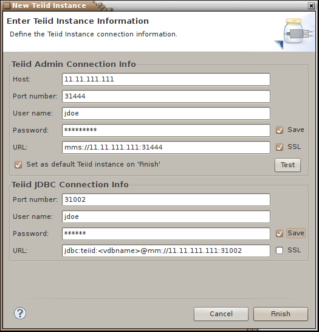

< Main Index Delta Cloud Tools >
Last revised January 20, 2010
Teiid Designer is a graphical data modeling tool that enables rapid definition, integration, management and testing of data services without programming using the Teiid runtime engine.
For more details on Teiid and Teiid Designer visit: http://www.teiid.org
New Teiid Instance Wizard |
|
|
New Teiid Instance |
The New Teiid Instance wizard has changed to allow separate input for host and port as well as username and password. Also featured are options to change security setting (SSL) and to save password. Lastly, this wizard page contains Teiid JDBC connection info as well. This information is required for the Preview Data and Execute VDB features. Note that the JDBC URL field contains a placeholder that will be filled in when either action is performed.  |
DDL Export Options
|
|
|
Sybase |
In CR1 Sybase has been included as an option in
the DDL Export wizard. |
|
PostgreSQL |
In CR1 PostgreSQL has been included as an option
in
the DDL Export wizard. |
|
|
|